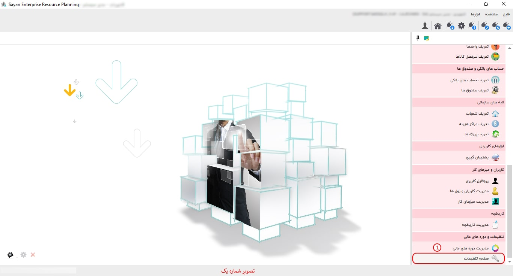
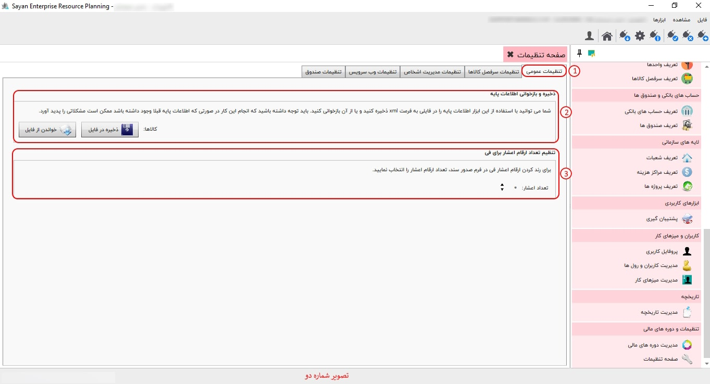
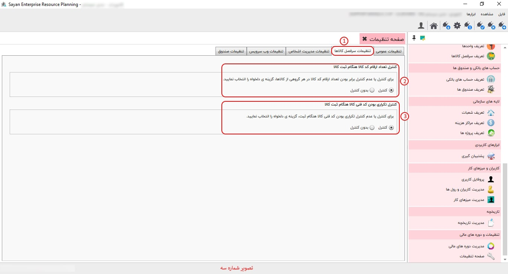
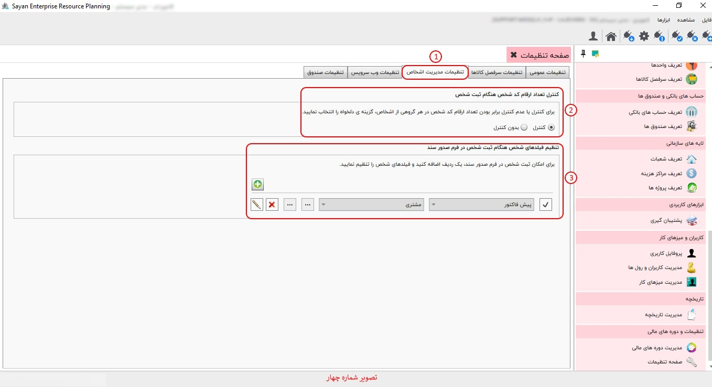
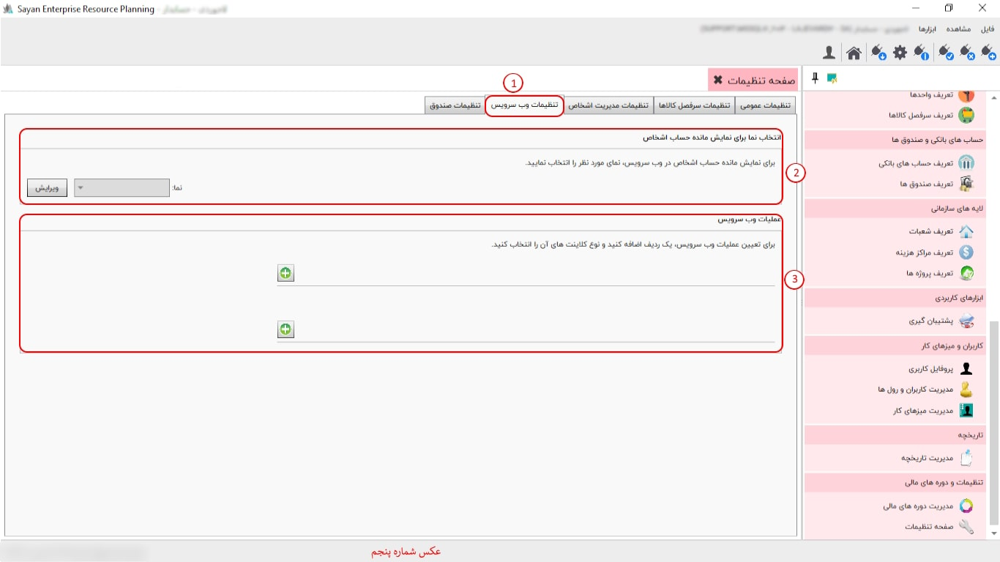
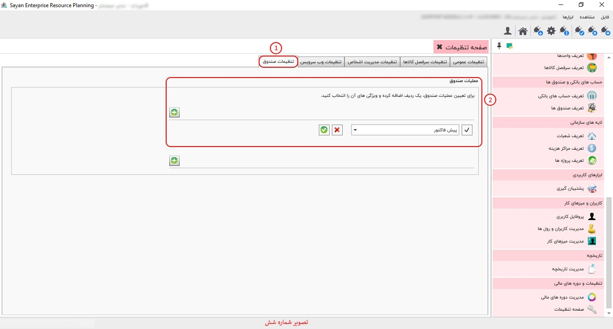

در صفحه تنظیمات امکانات «تنظیمات عمومی»، «تنظیمات سرفصل کالاها»، «تنظیمات مدیریت اشخاص» ، «تنظیمات صندوق»، «تنظیمات وب سرویس» برای شما پیاده سازی شده است.
برای ادامه مطلب به تصویر شماره دو مراجعه نمایید.
-تنظیمات عمومی (کادر شماره یک):در این بخش، شما میتوانید تنظیمات مربوط به ذخیره و بازخوانی اطلاعات را مدیریت کنید. یکی از گزینههای موجود در این قسمت، تعداد ارقام اعشار برای "فی" است. با تنظیم این گزینه، میتوانید دقت ارقام اعشار نمایش دادهشده برای مقدار "فی" را مشخص کنید.
-ذخیره و بازخوانی اطلاعات پایه (کادر شماره دو):در قسمت تنظیمات عمومی، امکان ذخیره و بازخوانی اطلاعات کالاها از طریق ابزارهای مربوطه فراهم شده است: با استفاده از دکمه «ذخیره در فایل»، میتوانید اطلاعات کالاهای ثبتشده را در قالب «XML» بر روی کامپیوتر خود ذخیره کنید. همچنین، برای بهروزرسانی اطلاعات کالاها، کافی است دکمه «خواندن از فایل» را کلیک کرده و فایل موردنظر را برای بازیابی اطلاعات انتخاب کنید. توجه داشته باشید که تنها اطلاعاتی قابل بازیابی هستند که در قالب «XML» ذخیره شده باشند.
-تنظیم تعداد ارقام اعشاری برای فی(کادر شماره سه):در تنظیمات عمومی، شما میتوانید تعداد ارقام اعشار برای مقدار "فی" را در تمامی فرمهای صدور و ویرایش مشخص کنید. این تنظیم به شما امکان میدهد تا دقت نمایش ارقام اعشار را از 0 تا 12 رقم اعشار تنظیم نمایید.
برای ادامه مطلب به تصویر شماره سه مراجعه فرمایید.
-تنظیمات سر فصل کالاها(کادر شماره یک):"در این بخش شما میتوانید کد فنی کالای مورد نظر خود را بر اساس نیاز تان انتخاب کنید."
-کنترل تعداد ارقام کد کالا هنگام ثبت کالا(کادر شماره دو):اگر از گزینه "کنترل" استفاده کنید، زمانی که اولین کد کالا را وارد میکنید، اگر کد کالا مد نظرتان از "01" شروع شود. در این حالت، سیستم فقط کدهای دو رقم را میپذیرد. به عبارت دیگر، اگر کدی بالاتر از 99 (مثل 100 یا بیشتر) وارد کنید، سیستم آن را قبول نمیکند. همچنین، وارد کردن کدی کمتر از "01" به طور مثال 8 چون یک رقمی مجاز نخواهد بود. اما اگر گزینه "بدون کنترل" کلیک کنید، هیچ محدودیتی برای وارد کردن کد کالا وجود ندارد و میتوانید هر عددی، چه بیشتر و چه کمتر از این بازه، وارد کنید.
-کنترل تکراری بودن کد فنی کالا هنگام ثبت کالا (کادر شماره سه):در این قسمت اگر روی کنترل کلیک کنید کد فنی تکراری قبول نمیکنه اما اگر بدون کنترل کلیک کنید شما می توانید حتی کد فنی تکراری را هم وارد کنید.
برای ادامه مطلب به تصویر شماره چهار مراجعه نمایید.
"برای مشاهده ویدیو آموزشی مربوط به این بخش، به لینک زیر مراجعه نمایید."
-تنظیمات مدیریت اشخاص(کادر شماره یک):در این بخش شما میتوانید کد شخص مورد نظر خود را بر اساس نیاز تان انتخاب کنید."
-کنترل تعداد ارقام کد شخصی هنگام ثبت شخص (کادر شماره دو):اگر بر روی گزینه "کنترل" کلیک کنید، به این معناست که کد جزئی که تعریف میکنید باید دقیقاً با تعداد ارقام تعیینشده مطابقت داشته باشد. برای مثال، اگر کد جزئی شما دو رقمی باشد (مثلاً 02)، شما فقط میتوانید کدهایی تا دو رقم (مثلاً از 00 تا 99) وارد کنید و نمیتوانید کدی با تعداد ارقام بیشتر یا کمتر وارد کنید. اما اگر گزینه "بدون کنترل" را انتخاب کنید، محدودیتی در تعداد ارقام وارد شده وجود نخواهد داشت و میتوانید کدهای با هر تعداد رقم را تعریف کنید.
تنظیم فیلدهای شخص هنگام ثبت شخص در فرم صدور سند (کادر شماره سه ):«در این بخش، شما میتوانید تنظیماتی را انجام دهید تا هنگام صدور سند، ثبت نام مشتری و عملیات مربوطه بهطور خودکار و سریع انجام شود. این قابلیت به شما کمک میکند تا فرآیند ثبت اسناد را بهصورت کارآمدتر و با حداقل زمان صرف شده انجام دهید.»
برای ادامه مطلب به تصویر شماره پنج مراجعه نمایید.
-تنظیمات وب سرویس(کادر شماره یک):برای تنظیم وب سرویس در نرمافزار سایان، کافی است نوع عملیات و نوع کلاینتهای مورد نظر خود را تعیین کنید. لازم به ذکر است که برای هر یک از عملیاتهای مختلف، این نرمافزار قابلیت تعریف وب سرویس را فراهم میکند.
-انتخاب نما برای نمایش مانده حساب اشخاص(کادر شماره دو):«برای انتخاب و ثبت یکی از نماهای تخصیص داده شده به وب سرویس، کافی است بر روی گزینه "ویرایش" کلیک کرده و نمای مورد نظر را انتخاب کنید.»
-عملیات وب سرویس (کادر شماره سه):«در این قسمت دو فیلد اضافه وجود دارد: فیلد اول برای اضافه کردن عملیات از سایر سیستمها به وب سرویس و فیلد دوم برای اضافه کردن عملیات خزانه به وب سرویس.»
برای ادامه مطلب به تصویر شماره شش مراجعه نمایید.
-تنظیمات صندوق (کادر شماره یک):"در صورتی که بخواهید تسویه یک عملیات را به صندوق خاصی اختصاص دهید، نام آن عملیات را در این قسمت وارد کنید. با ثبت نام عملیات، لیست تمامی صندوقهای فعال شما نمایش داده خواهد شد."
-عملیات صندوق (کادر شماره دو):